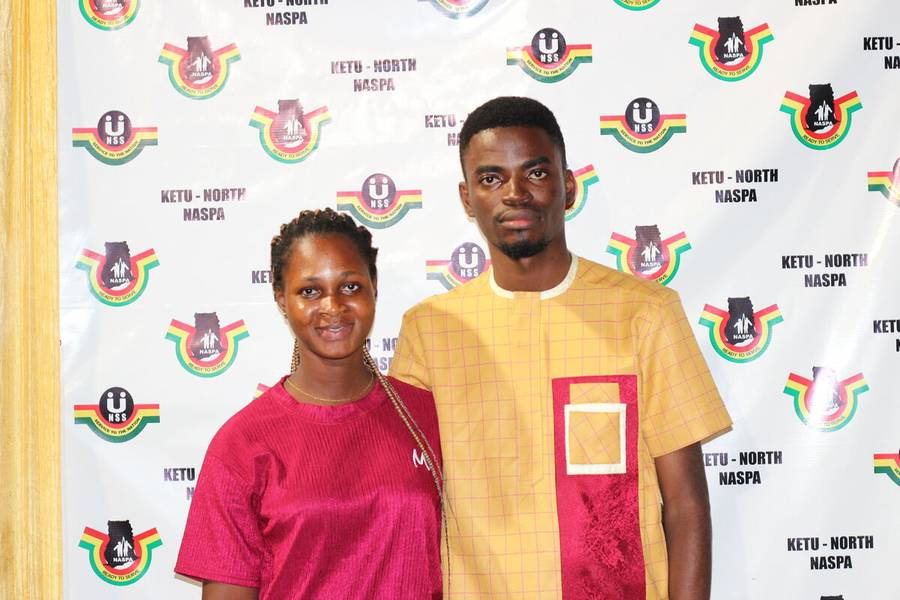
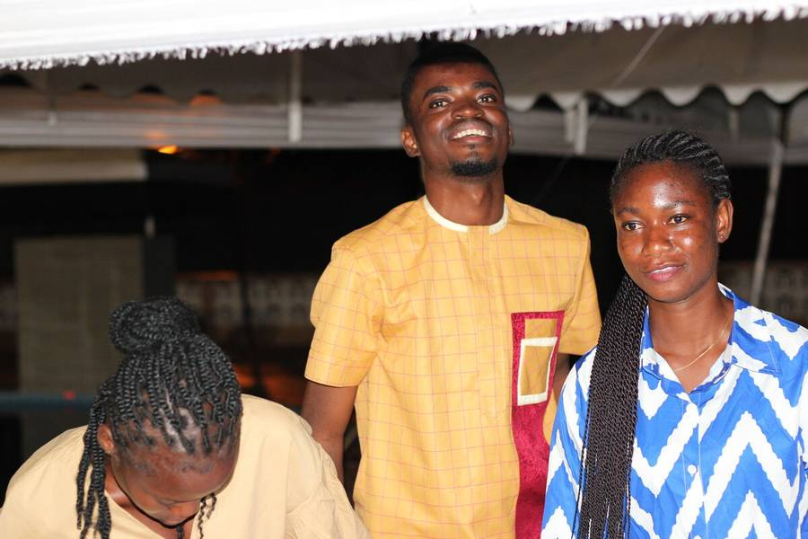
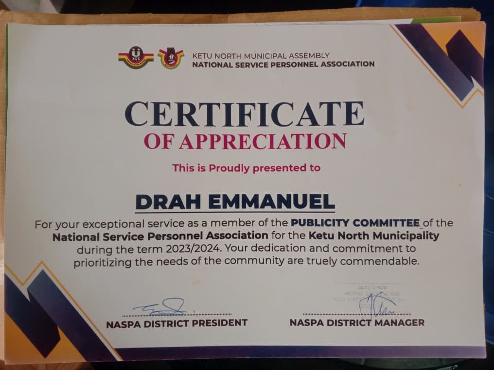
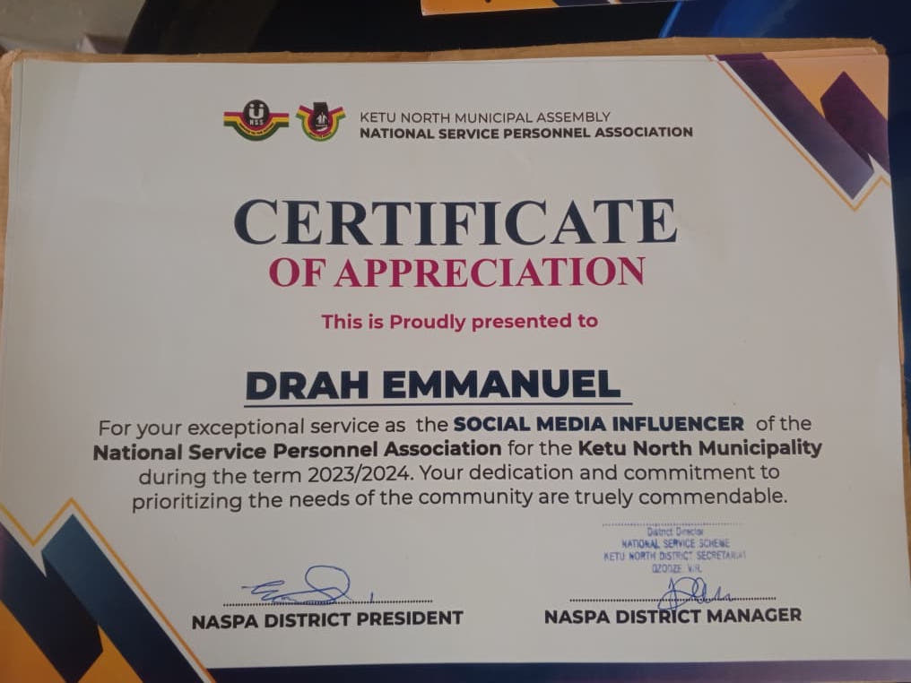
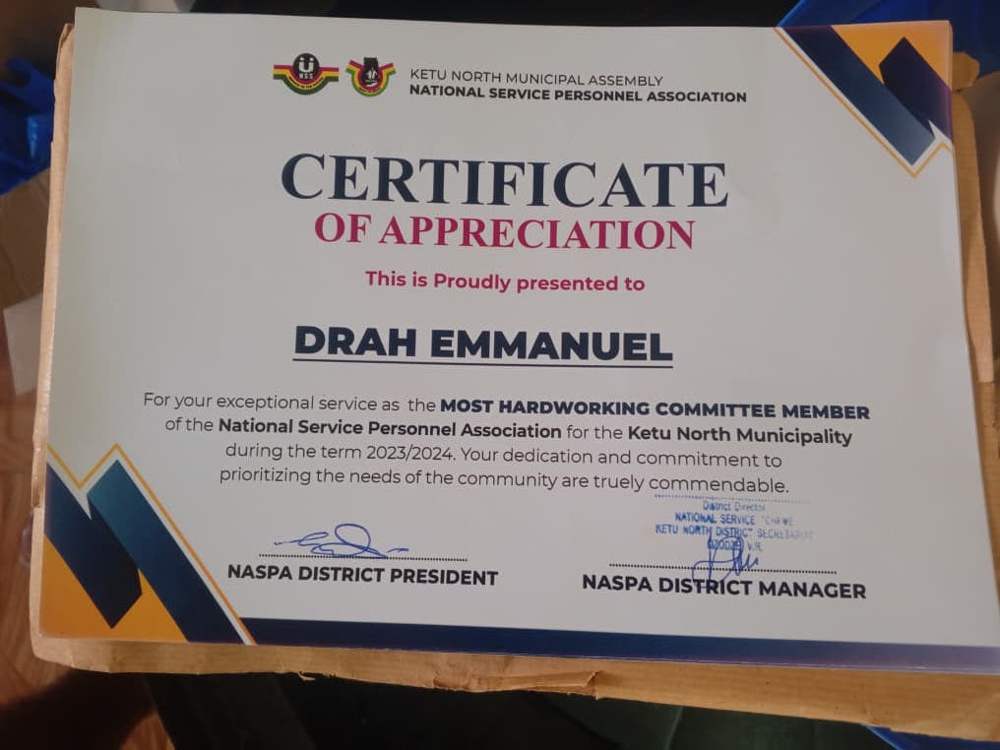

More than just
code.
I'm Emmanuel Drah — a developer from Dzodze, Ghana who turned a simple belief into a career: that well-built software can change the lives of real people in real communities. Not just in Silicon Valley. Here too.

Built from the ground up.
HND in Information & Communication Technology
Three years of turning curiosity into competence. I went beyond the curriculum — building my first Flutter apps, learning Python backend development, and discovering that I wanted to create systems, not just study them.
National Service · MIS & Public Relations
During my service year, I managed data systems and handled digital communications for one of Ghana's most critical public institutions. It showed me firsthand how much healthcare depends on reliable software — and planted the seed for ALERA.
Building ALERA & Freelance Development
I shipped ALERA — a full-scale, real-time healthcare coordination platform — from scratch. Nights, weekends, early mornings. Alongside that, I've taken on freelance projects helping businesses translate their ideas into production-ready software.
What's Coming
I'm looking to join or collaborate with teams building meaningful products — whether that's a startup scaling its infrastructure, a healthcare organisation needing custom software, or a product company shipping mobile-first experiences.
What I build with.
Frontend
 React & Next.js
React & Next.js TypeScript / JavaScript
TypeScript / JavaScript HTML5 & CSS3
HTML5 & CSS3
Mobile
 Flutter & Dart
Flutter & Dart Firebase (Auth, Firestore)
Firebase (Auth, Firestore)
Backend
 Python & FastAPI
Python & FastAPI PostgreSQL
PostgreSQL REST APIs & WebSockets
REST APIs & WebSockets
Tools & Workflow
 Git & GitHub
Git & GitHub VS Code
VS Code Android Studio
Android Studio
Life Outside the IDE.
Code is just syntax without the people it serves. Whether I'm collaborating with fellow developers, exploring my community, or simply finding a quiet moment to recharge—I believe that living a full life offline is what makes my work online so impactful.

Focusing on the big picture and planning the next move.

Stepping away from the screen to experience the world.

Connecting with people — the real drivers of technology.
Beyond the keyboard.
The best validation of my work comes not from metrics, but from people. These are the moments that reminded me that showing up consistently is always worth it.

Immersive VR Engineering
Successfully completed a 14-day intensive program on "Re-Imagining Community Tourism Through Immersive VR Technologies" organized by DIPPER LAB (KNUST) and CYNOSOL. A recognition of advancing digital tourism experiences.

Publicity Committee Member
Awarded for exceptional service and dedication to the National Service Personnel Association. Recognized for effectively managing communications and prioritizing the needs of the community through strategic outreach.

Social Media Influencer
Commended for leveraging digital platforms to amplify the association's impact. This recognition highlights a commitment to building community engagement, awareness, and digital presence during the service term.

Most Hardworking Member
Honored as the most hardworking committee member, reflecting relentless work ethic and unyielding dedication. A true testament to the core philosophy of 'Success Above Dreams'—showing up and doing the work.